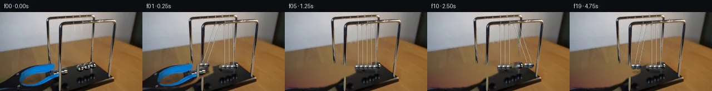

![首帧]()

Round 00
2026-11-04T22:56:28.364459+00:00像素候选变化代码 +267/−0inspection 更新
pixels 8b7faa04a4ddc164 · code 80cf0a6f2d533ae3
查看本轮 generate.py 真实 diff
--- previous/generate.py +++ current/generate.py @@ -0,0 +1,267 @@ +#!/usr/bin/env python3 +"""Generate a five-second pixel continuation of the supplied Newton's cradle shot.""" + +from pathlib import Path +import math + +import cv2 +import numpy as np +from PIL import Image, ImageDraw, ImageFont + +import artifact_io + + +ROOT = Path(__file__).resolve().parent +W, H = 256, 144 + + +def polygon_mask(points, blur=0.0): + mask = np.zeros((H, W), np.uint8) + cv2.fillPoly(mask, [np.asarray(points, np.int32)], 255) + if blur: + k = int(blur * 4 + 1) | 1 + mask = cv2.GaussianBlur(mask, (k, k), blur) + return mask + + +def fit_table(src): + """Robust quadratic RGB model for the tabletop, used only below the tool.""" + yy, xx = np.mgrid[:H, :W] + horizon = 72.0 - 0.121 * xx + samples = yy > horizon + 4 + # Regions known to contain the tool and cradle are not fit samples. + samples &= ~((xx < 128) & (yy > 87)) + samples &= ~((xx > 76) & (xx < 218) & (yy > 43)) + # Reject obvious black/metal objects in otherwise safe table areas. + lum = src.mean(2) + sat = src.max(2) - src.min(2) + samples &= (lum > 62) & (lum < 190) & (sat < 96) + + xn = (xx - 128.0) / 128.0 + yn = (yy - 86.0) / 72.0 + design = np.stack([np.ones_like(xn), xn, yn, xn * yn, xn * xn, yn * yn], 2) + X = design[samples] + pred = np.empty_like(src, dtype=np.float64) + for c in range(3): + y = src[..., c][samples].astype(np.float64) + keep = np.ones(len(y), bool) + coef = np.zeros(6) + for _ in range(5): + coef = np.linalg.lstsq(X[keep], y[keep], rcond=None)[0] + residual = y - X @ coef + scale = max(2.0, 1.4826 * np.median(np.abs(residual[keep] - np.median(residual[keep])))) + keep = np.abs(residual) < 2.8 * scale + pred[..., c] = np.tensordot(design, coef, axes=([2], [0])) + + # Very subtle deterministic grain avoids a conspicuously flat filled area. + rng = np.random.default_rng(5201) + grain = rng.normal(0, 1, (H, W)).astype(np.float32) + grain = cv2.GaussianBlur(grain, (0, 0), 2.8, sigmaY=0.55) + grain += 0.75 * np.sin(xx / 16.0 + yy / 31.0) + tint = np.stack([1.0 * grain, 0.78 * grain, 0.48 * grain], 2) + return np.clip(pred + tint, 0, 255).astype(np.uint8) + + +def build_clean_plate(src): + table = fit_table(src) + outer = polygon_mask([ + (-8, 107), (18, 104), (39, 98), (70, 92), (96, 93), + (111, 98), (125, 99), (127, 110), (114, 116), (105, 119), + (94, 128), (70, 136), (36, 138), (8, 137), (-8, 142), + ], 1.2) + a = (outer.astype(np.float32) / 255.0)[..., None] + plate = np.clip(src * (1 - a) + table * a, 0, 255).astype(np.uint8) + + # Remove the original five strings/balls. Thin string masks are inpainted + # from immediate neighbors; tabletop synthesis is not used in this zone. + moving = np.zeros((H, W), np.uint8) + for p0, p1 in [ + ((131, 21), (105, 96)), ((139, 21), (113, 98)), + ((147, 21), (147, 96)), ((155, 21), (155, 96)), + ((163, 21), (163, 95)), + ]: + cv2.line(moving, p0, p1, 255, 2, cv2.LINE_AA) + for x, y in [(105, 97), (113, 99), (147, 101), (155, 101), (163, 100)]: + cv2.circle(moving, (x, y), 7, 255, -1, cv2.LINE_AA) + + # Avoid erasing the prominent front/rear vertical frame tubes. … diff truncated; 180 more lines …